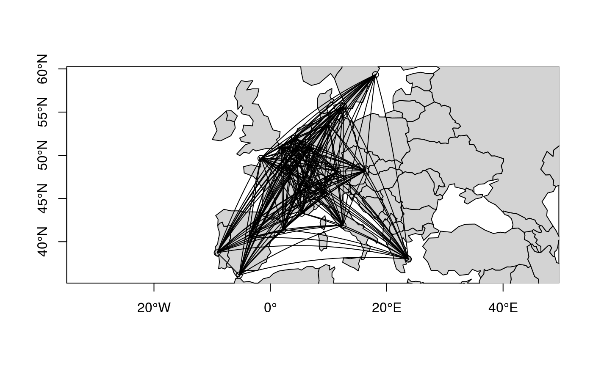

Classes and methods for handling networks or graphs whose nodes are geographical (i.e. locations in the globe). Create, transform, plot.
Installation
You can install the released version of geonetwork from CRAN with:
install.packages("geonetwork")geonetwork is in development. You can install the current version from GitHub with:
remotes::install_github("famuvie/geonetwork")Example
Creation
A geonetwork is an object of class igraph whose nodes have geospatial attributes (i.e. coordinates and CRS).
Consider the distances (in km) between 21 cities in Europe from the datasets package. A simple way of constructing a geonetwork is by combining a data.frame of nodes with one of edges:
cities <- cbind(
city = labels(datasets::eurodist),
ggmap::geocode(labels(datasets::eurodist), source = "dsk")
)
## ggmap can either use Google Maps Api (which requires registration
## with credit card and offers limited amount of queries) of
## Data Science Toolkit (DSK) whose service is being shut-down.
##
## Alternatively, uses OpenStreetMap Nominatim service
# tmaptools::geocode_OSM(labels(datasets::eurodist))
distances <-
expand.grid(
origin = labels(datasets::eurodist),
destin = labels(datasets::eurodist),
stringsAsFactors = FALSE,
KEEP.OUT.ATTRS = FALSE
)
distances <-
cbind(
distances[distances$destin < distances$origin,],
distance = as.numeric(datasets::eurodist)
)
str(cities)
#> 'data.frame': 21 obs. of 3 variables:
#> $ city: Factor w/ 21 levels "Athens","Barcelona",..: 1 2 3 4 5 6 7 8 9 10 ...
#> $ lon : num 23.72 2.16 4.35 1.85 -1.62 ...
#> $ lat : num 38 41.4 50.9 51 49.6 ...
str(distances)
#> 'data.frame': 210 obs. of 3 variables:
#> $ origin : chr "Barcelona" "Brussels" "Calais" "Cherbourg" ...
#> $ destin : chr "Athens" "Athens" "Athens" "Athens" ...
#> $ distance: num 3313 2963 3175 3339 2762 ...
eurodist <- geonetwork(distances, nodes = cities, directed = FALSE)Several assumptions were made here unless otherwise specified:
The first column in
citieswas matched with the first two columns indistances.The second and third columns in
citieswere assumed to be longitude and latitude in decimal degrees in a WGS84 CRS.The remaining column in
distanceswas treated as an edge weight.
Now we can readily plot the network, optionally with some additional geographical layer for context:
## Base system
plot(eurodist, axes = TRUE, type = "n")
plot(sf::st_geometry(spData::world), col = "lightgray", add = TRUE)
plot(eurodist, axes = TRUE, add = TRUE)